Identita domu
Třípodlažní dům na západní straně U náhonu u nároží ulice B. Jablonského, mezi 987 a 599; nízká stavba za ním vpravo je podle karty čp. 790. Řadový snímek ATO119_10_9_005 a čelní snímek cp_988_002 ukazují 4 osy (1 | 2 3 | 4) s dveřmi u jižního nároží.
Poznámka k identitě a GIS: GIS 387 dává průčelí 12,38 m; model 11,40 m podle situace 1928 a poměru šířek na snímcích
Použité prameny: fotografie ATO119_10_9_005, cp_988_002 (= ATO119_10_9_003), cp_599,987,988_001, zadní cp_988_001 (= ATO119_10_9_008), situace 1928 na listu cp_286_03, karty, GIS 387.
Kde je dům na fotografiích
Dům je na snímku v červeném rámečku, sousední domy jsou popsány čísly a každý otvor má ID, podle kterého se počty otvorů kontrolují proti modelu. Kliknutím otevřete větší obrázek.

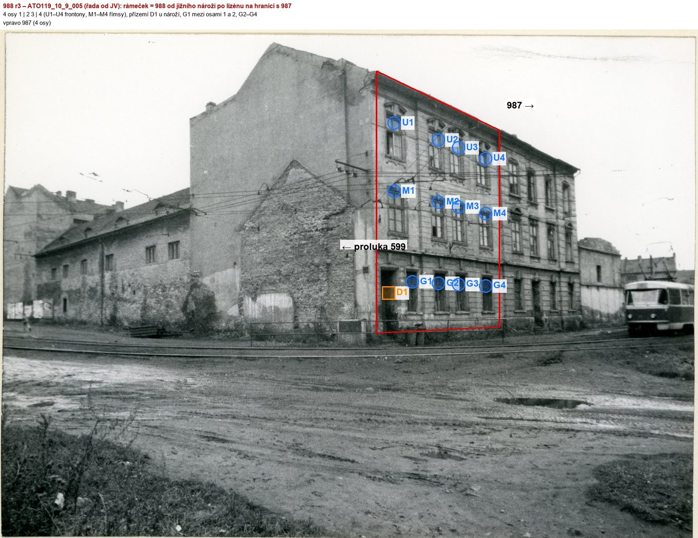
4 osy 1 | 2 3 | 4; šířka 11,40 m (situace 1928)

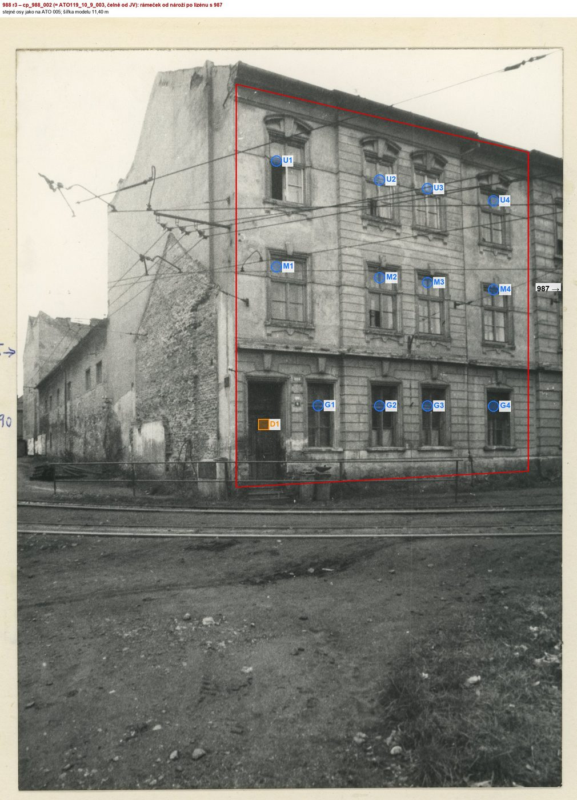
Přílohy v databázi (22)
Všechny přílohy struktury 988 v databázi Libuše, načtené živě 9. 11. 2026 jen pro čtení a otevřené. Kliknutím otevřete větší náhled.

plán / výkres
SHA-256 eaa09a4758cc…

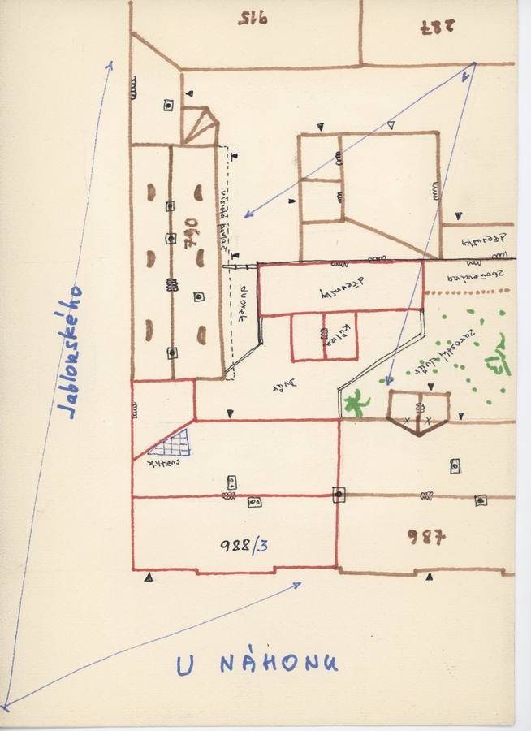
plán / výkres
SHA-256 165f7f7fad09…

fotografie
SHA-256 401fa70b7d86…

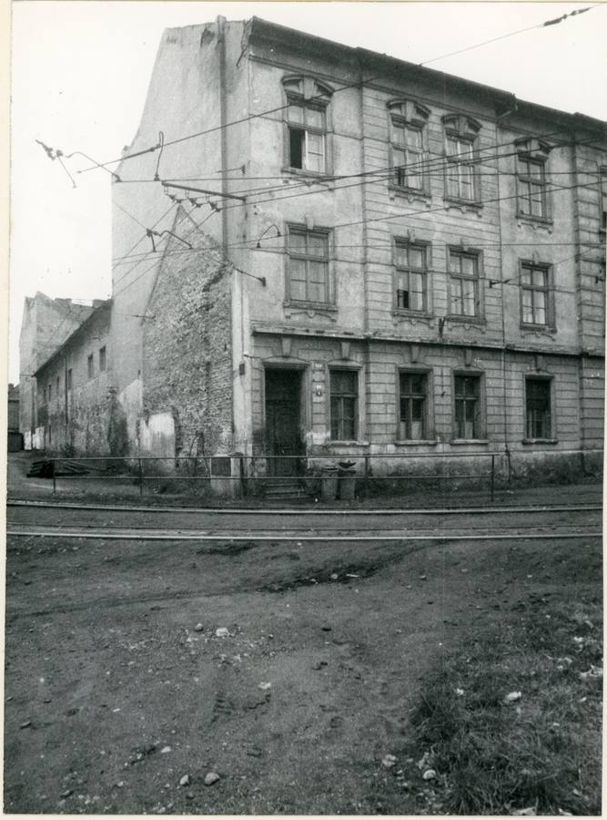
fotografie
SHA-256 242daf38a57b…

fotografie
SHA-256 d90e8069ac69…

fotografie
SHA-256 f0acd857f49f…

fotografie
SHA-256 6e4075f55e93…

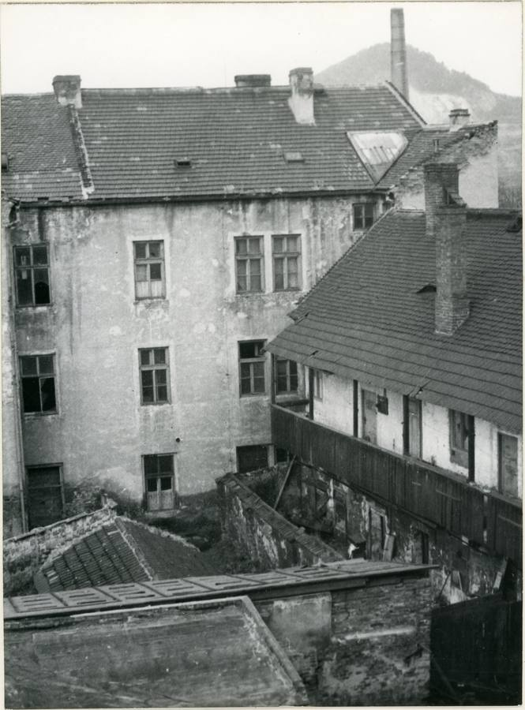
fotografie
SHA-256 53e989e34ce0…

fotografie
SHA-256 03c99af3652f…

fotografie
SHA-256 8339483d9cac…

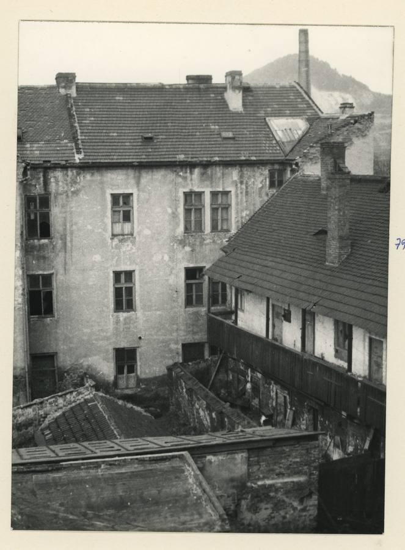
fotografie
SHA-256 b5b5b2aebbd7…

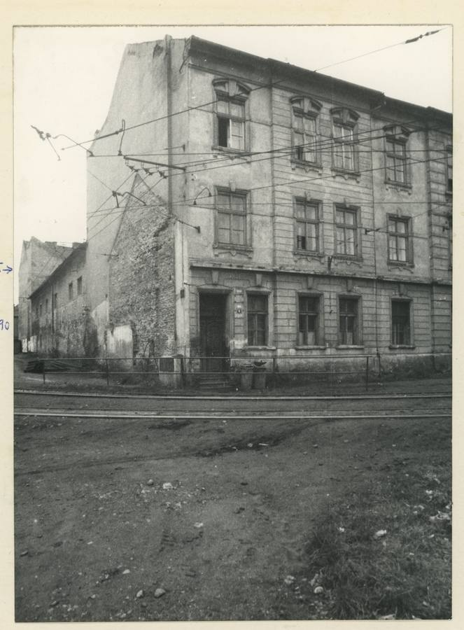
fotografie
SHA-256 b1ca76467ddf…

archivní karta
SHA-256 066ff0cd8f59…

archivní karta
SHA-256 9e70552bceed…

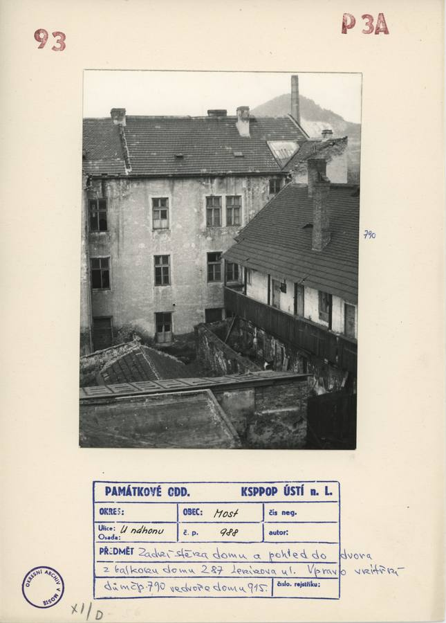
archivní karta
SHA-256 9a734c65e31e…

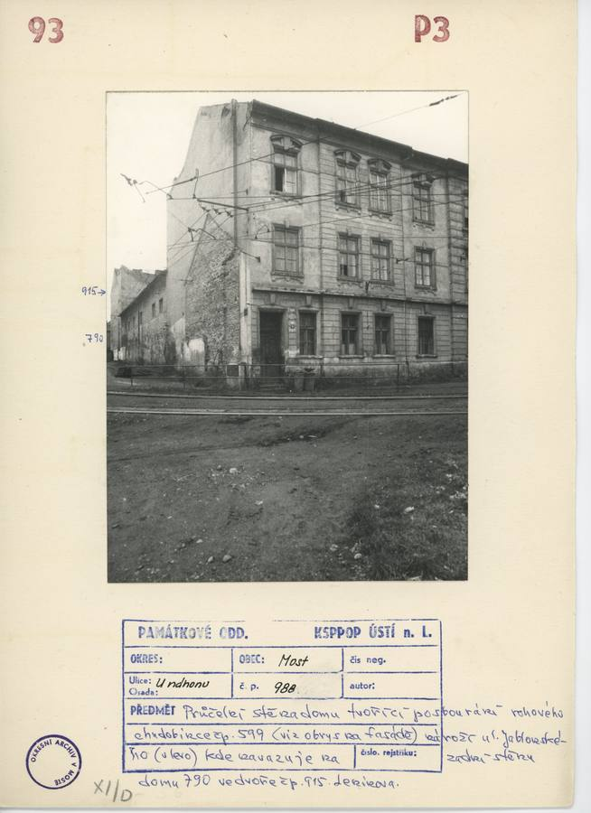
archivní karta
SHA-256 26a60b34f934…

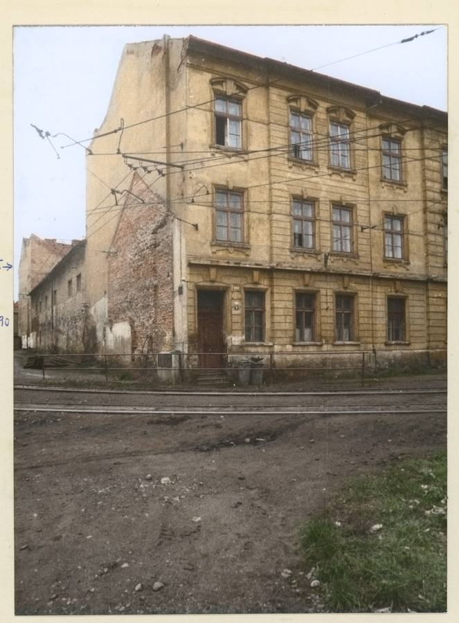
kolorovaná odvozenina
SHA-256 4327e70e05cd…

odvozenina bez tagu (kolorovaná / výřez / FRONT)
SHA-256 a4fee845b3fd…

odvozenina bez tagu (kolorovaná / výřez / FRONT)
SHA-256 e1e17fbae503…

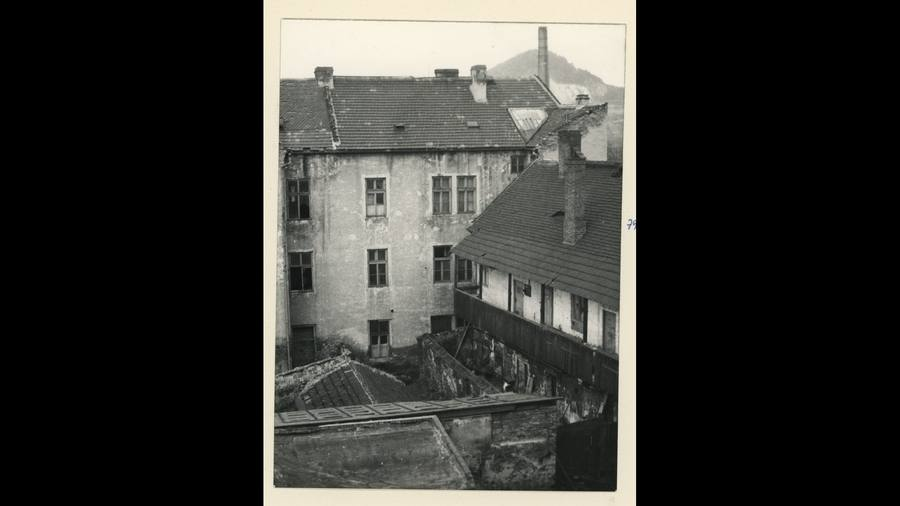
odvozenina bez tagu (kolorovaná / výřez / FRONT)
SHA-256 7d90c74a8f6b…

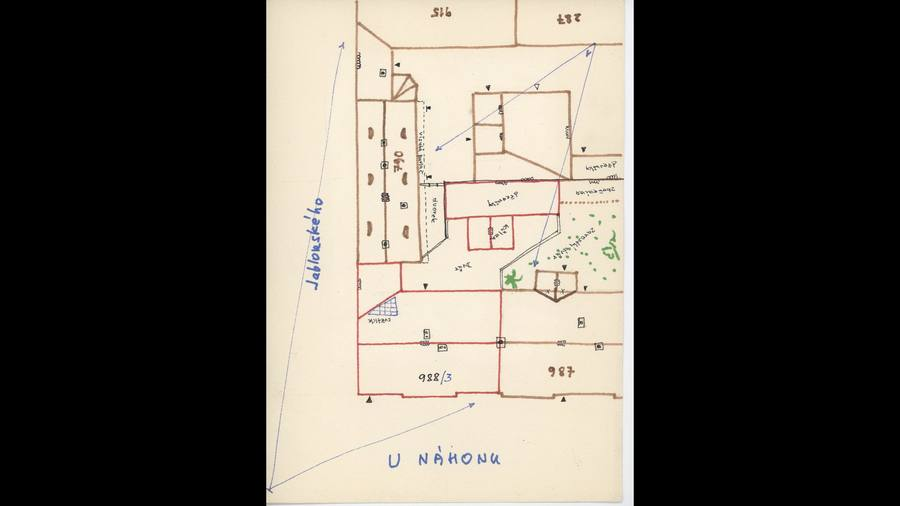
odvozenina bez tagu (kolorovaná / výřez / FRONT)
SHA-256 50ad01dc85d5…

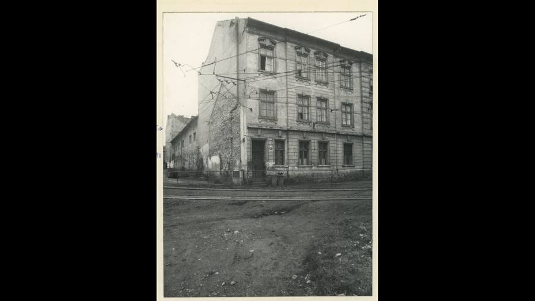
odvozenina bez tagu (kolorovaná / výřez / FRONT)
SHA-256 5f9a1554bb73…
Geometrie
| Revize geometrie | r4 |
|---|---|
| Úsek ulice | Z · západní strana U náhonu (od Rybalkovy k Na popravišti) |
| Poloha | GIS budova 387, popisek 988, ulice U náhonu (1938 K jatkám) |
| Šířka průčelí | 11,40 m |
| Výška okapu | 11,30 m (odhad) |
| Podlaží | 3 |
| Střecha podle pramenů | sedlová, hřeben podél ulice, štíty k 599 i k 987 (štít 988 na řadovém snímku s obrysem střechy 599); 3 komíny na hřebeni (zadní snímek) |
| Otvory / vikýře v modelu | 22 / 0 |
| Polygonů | 613 |
Kontrolní pohledy

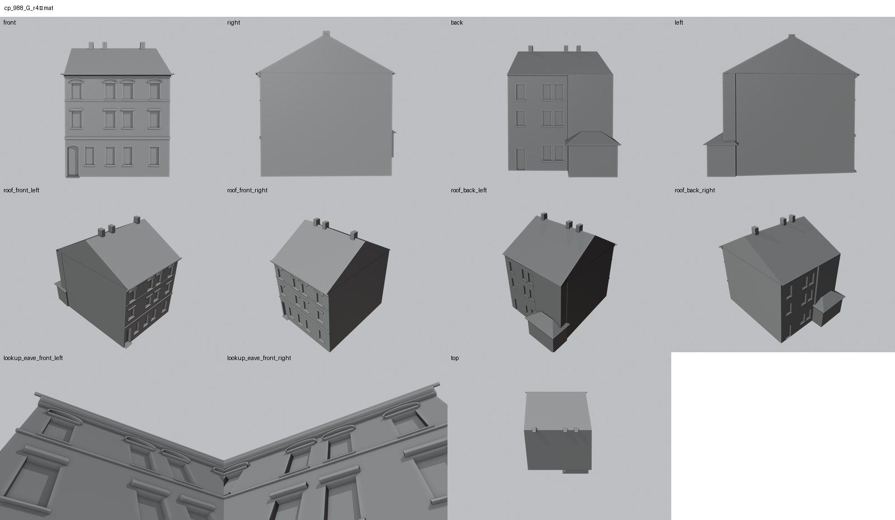

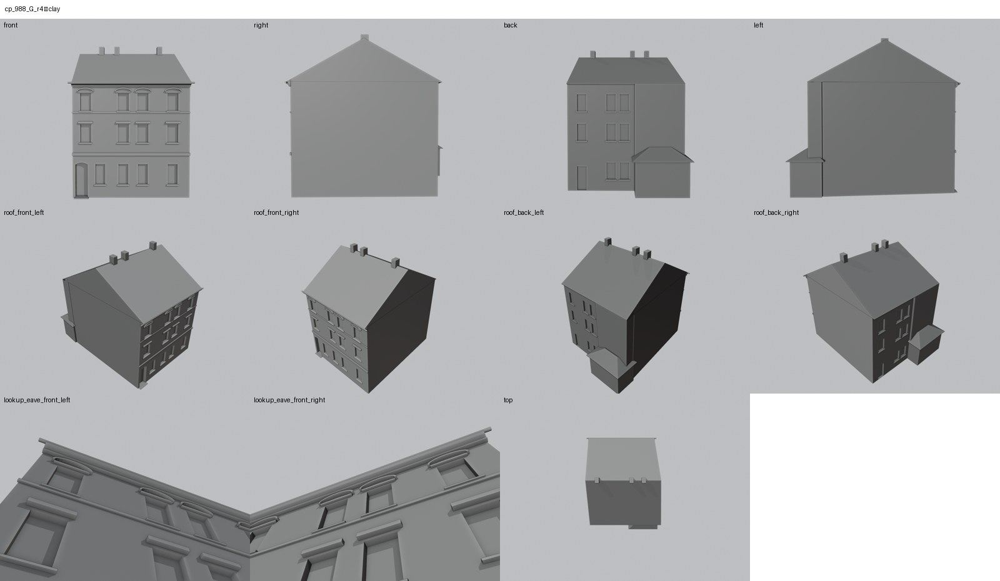

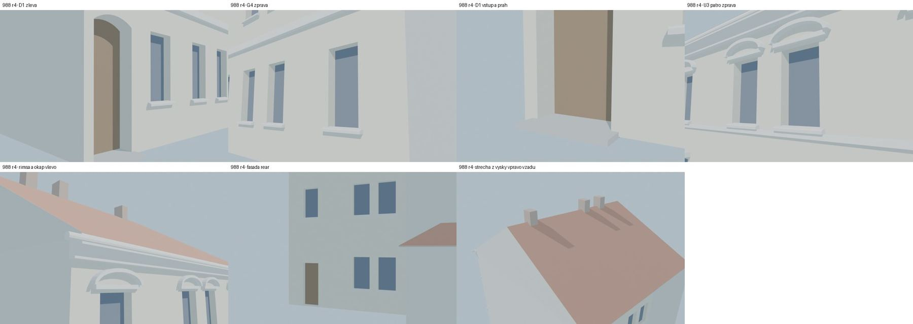
Kontrola modelu
| Brána geometrie (automaticky) | v pořádku |
|---|---|
| Uzavřené podkroví (GLB) | v pořádku: zásahy paprsků 0, nekryté zdivo 0,00 m², střecha nad prázdnem 0,00 m² |
| UV mapování | v pořádku: 0 zkolabovaných ploch z 613 |
| Síť | v pořádku |
| Počty otvorů proti pramenu | souhlasí zčásti (passed_partial) |
| Vizuální kontrola | prošla (Claude (Opus 5.5), 2026-11-09) |
| Kontrola střechy | prošla |
- U1–U4, M1–M4, G1–G4, D1: rámečky ATO005 a cp_988_002 (souhlasí)
- RD1, R*: zadní stěna – hypotéza (přiznaná hypotéza)
Textury
zatím bez textur
Až Codex dodá texturovaný model, objeví se v prohlížeči nahoře volba Textury (Codex).
Hypotézy
Vše níže je model_hypothesis, provisional, locked: false.
- výšky podlaží a okapu z rektifikace bez kótovaného plánu (±0,3 m); absolutní měřítko H = 11,3 m odhad podle poměru výška/šířka na cp_988_002
- polohy os ±0,3 m (rektifikace cp_988_002, kontrola cp_599,987,988_001)
- šířka oken 1,05 m, dveří 1,25 m odhad
- JZ výběžek GIS půdorysu modelován jako přízemní přístavek s valbou (3,6 m) – na zadním snímku zakryt střechou čp. 790; výška i střecha hypotéza
- sklon střechy ~31° (zdvih 4,2 m) odhad ze štítu na řadovém snímku; poloha hřebene uprostřed hloubky
- komíny: počet 3 ze zadního snímku, polohy ±1 m
- 9.11.2026: šířka 11,40 m místo GIS 12,38 m – dělicí zeď s 987 posunuta o 0,98 m k severu (rozložení dávky, kanonický GIS beze změny; rozhodnutí k potvrzení uživatelem)
- zadní otvory (3 osy, dveře) ±0,5 m podle šikmého snímku shora – hypotéza
Historie revizí modelu
- r1 23.10.2026 (Claude): first build (GIS SW extension extruded to full height -> 9.75 m2 uncovered masonry, rear facade only east of it)
- r2 3.11.2026 (Claude): SW extension as a low annex box + hip (hypothesis), rear facade over the full rear wall with 4 columns after cp_988_001 (790 is not a wing of 988)
- r3 3.11.2026 (Claude): party wall moved: W 11.40 (situation 1928 + photo width ratio), axes re-registered on ATO119_10_9_005, rear 3 axes + door (ATO 008)
- r4 3.11.2026 (Claude): rear facade on the straight wall segment north of the kink (r3 openings 2-3 missed the wall), otherwise as r3
Soubory
- Geometrie čp. 988, GLB (revize r4)
- Pracovní model: F:\MOST\output\u_nahonu_street_claude_2026-10-23\houses\cp988\r4\cp_988_G_r4.blend
- Plán modelu: F:\MOST\output\u_nahonu_street_claude_2026-10-23\houses\cp988\geometry_plan.json